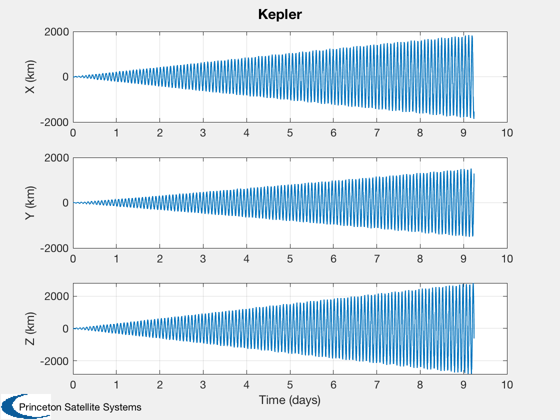
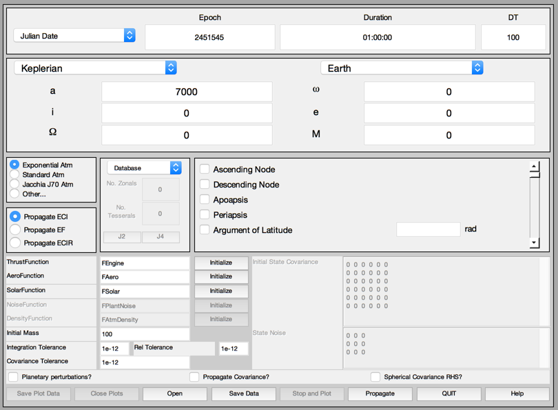
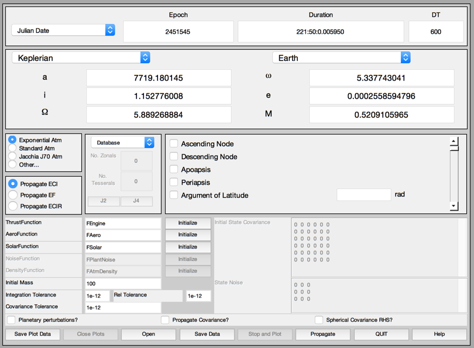
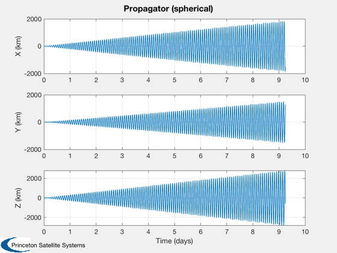
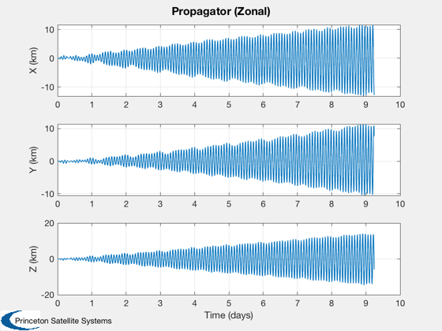
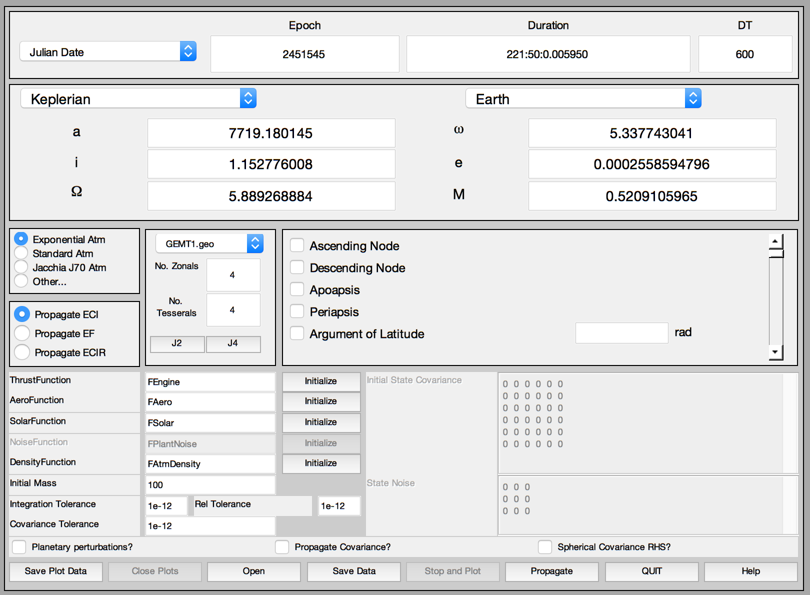
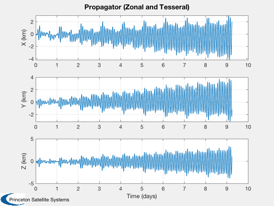
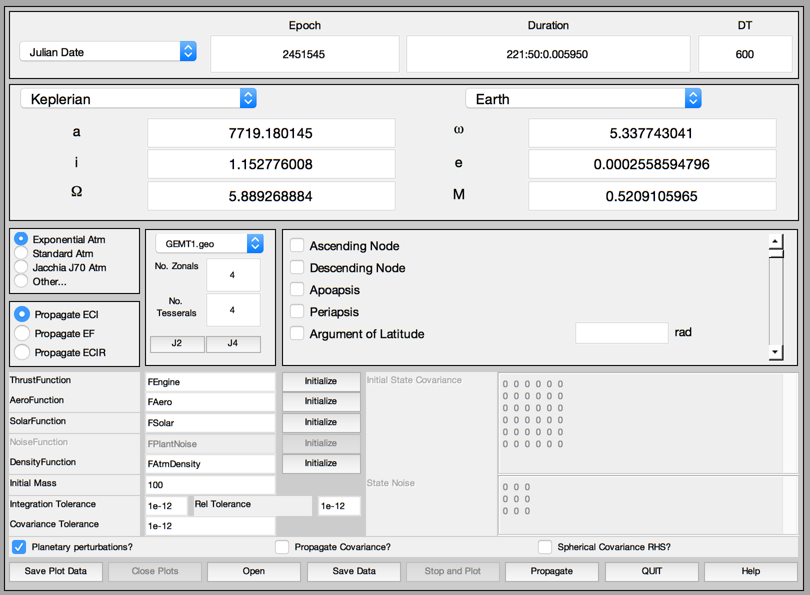
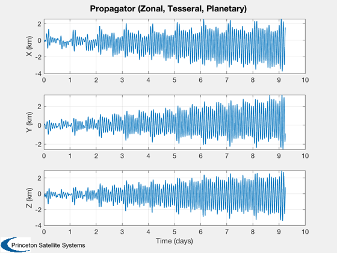
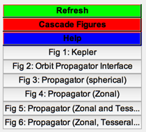

Compare various orbit propagators with a Topex ephemeris.
------------------------------------------------------------------------
See also Plot2D, TimeLabl, Date2JD, RVOrbGen, PropagateOrbitPlugIn,
ReadTopexPOE, RV2El, S2HMS
------------------------------------------------------------------------
Contents
d = ReadTopexPOE( '92dec22-92dec30.poe', 10 );
jD(1) = Date2JD( d.uTC(1) );
jD(2) = Date2JD( d.uTC(2) );
dT = 86400*(jD(2) - jD(1));
nSim = length( d.uTC );
t = (0:(nSim-1))*dT;
x0 = d.xECI(:,1);
el = RV2El( x0(1:3), x0(4:6) );
[r, v] = RVOrbGen( el, t );
[time, xLabl] = TimeLabl( t );
n = size(r,2);
h = Plot2D( time(1:n), d.xECI(1:3,1:n) - r, xLabl,...
['X (km)';'Y (km)';'Z (km)'], 'Kepler' );

Initialize
tag = PropagateOrbitPlugIn( 'initialize' );
p = PropagateOrbitPlugIn( 'get data', tag );

Spherical
p.epoch.jD = jD(1);
[hh,mm,ss] = S2HMS( t(end) );
p.epoch.duration = sprintf( '%2i:%2i:%f', hh, mm, ss );
p.epoch.dT = dT;
p.elements.r = x0(1:3);
p.elements.v = x0(4:6);
PropagateOrbitPlugIn( 'set data', tag, p );
PropagateOrbitPlugIn( 'propagate', tag );
PropagateOrbitPlugIn( 'close plots', tag );
r = PropagateOrbitPlugIn( 'get r', tag );
n = size(r,2);
if( ~isempty(r) )
h = Plot2D( time(1:n), d.xECI(1:3,1:n) - r, xLabl,...
['X (km)';'Y (km)';'Z (km)'], 'Propagator (spherical)' );
end
 
Zonal
p.f.nZonal = 4;
p.f.nTess = 0;
p.gravityModelName = 'GEMT1';
PropagateOrbitPlugIn( 'set data', tag, p );
PropagateOrbitPlugIn( 'propagate', tag );
PropagateOrbitPlugIn( 'close plots', tag );
r = PropagateOrbitPlugIn( 'get r', tag );
n = size(r,2);
if( ~isempty(r) )
h = Plot2D( time(1:n), d.xECI(1:3,1:n) - r, xLabl,...
['X (km)';'Y (km)';'Z (km)'], 'Propagator (Zonal)' );
end


Add tesseral
p.f.nZonal = 4;
p.f.nTess = 4;
p.gravityModelName = 'GEMT1';
PropagateOrbitPlugIn( 'set data', tag, p );
PropagateOrbitPlugIn( 'propagate', tag );
PropagateOrbitPlugIn( 'close plots', tag );
r = PropagateOrbitPlugIn( 'get r', tag );
n = size(r,2);
if( ~isempty(r) )
h = Plot2D( time(1:n), d.xECI(1:3,1:n) - r, xLabl,...
['X (km)';'Y (km)';'Z (km)'], 'Propagator (Zonal and Tesseral)' );
end
 
Add planetary
p.f.nZonal = 4;
p.f.nTess = 4;
p.f.planetaryDisturbancesOn = 1;
p.gravityModelName = 'GEMT1';
PropagateOrbitPlugIn( 'set data', tag, p );
PropagateOrbitPlugIn( 'propagate', tag );
PropagateOrbitPlugIn( 'close plots', tag );
r = PropagateOrbitPlugIn( 'get r', tag );
n = size(r,2);
if( ~isempty(r) )
h = Plot2D( time(1:n), d.xECI(1:3,1:n) - r, xLabl, ['X (km)';'Y (km)';'Z (km)'], 'Propagator (Zonal, Tesseral, Planetary)' );
end
 
List of figures
Figui;
